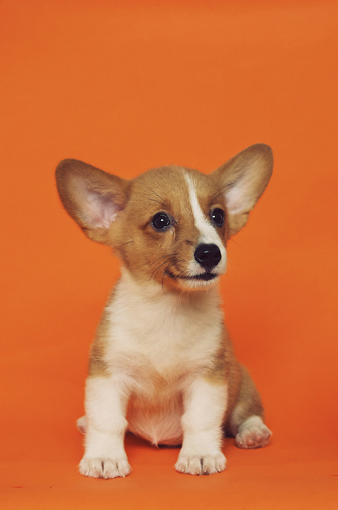
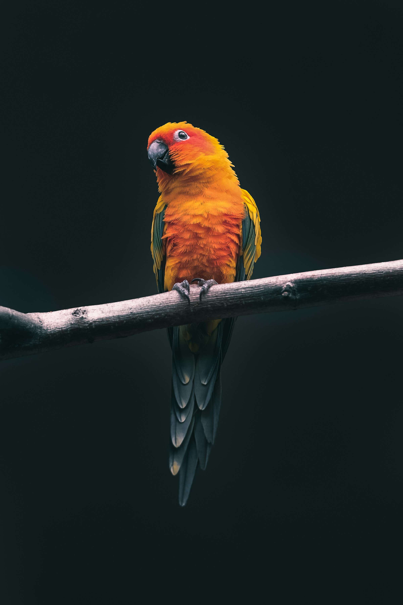
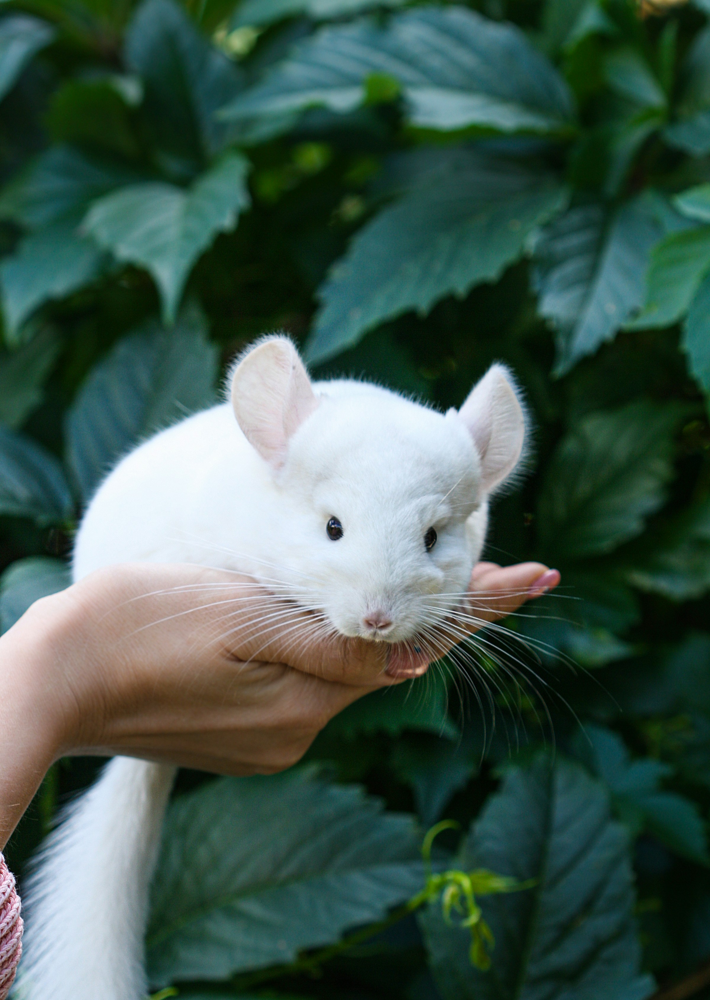

Katt
Livslängd: ca 15-20 år
Kost: Torrfoder & Mjukmat
Tidskrav: 30 min/dag

Hund
Livslängd: ca 10-15 år
Kost: Torrfoder
Tidskrav: 1-2 timmar/dag

Papegoja
Livslängd: ca 10-50 år
Kost: Pellets, Frukt & Grönsaker
Tidskrav: 1 timme/dag

Chinchilla
Livslängd: ca 10-15 år
Kost: Pellets, Hö, Grönsaker
Tidskrav: 30 min/dag